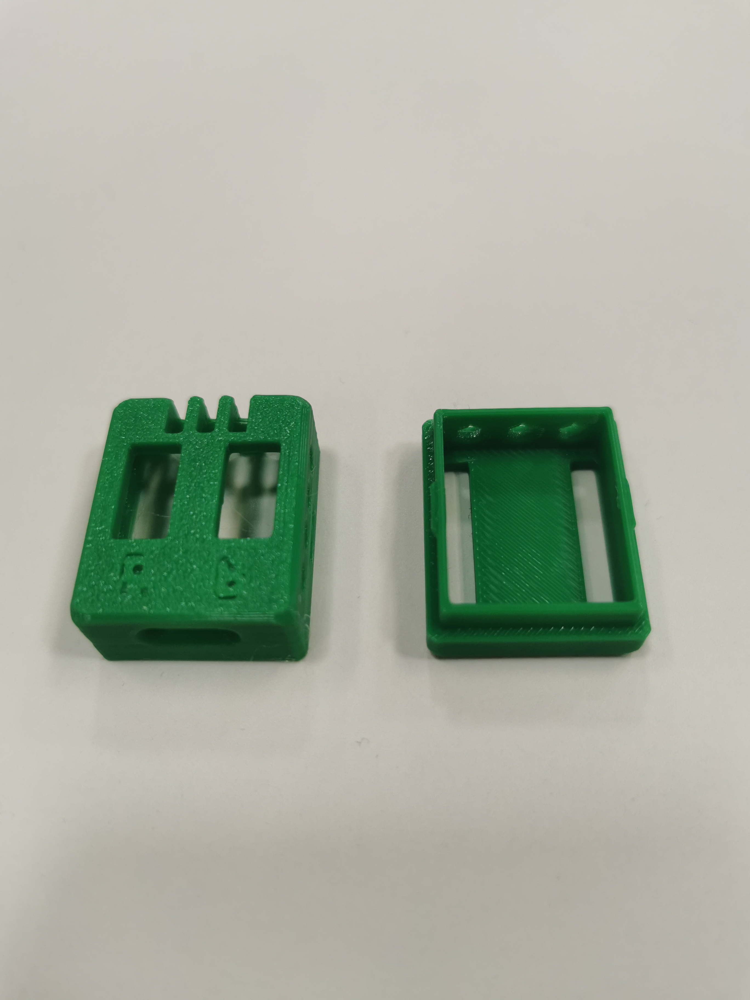
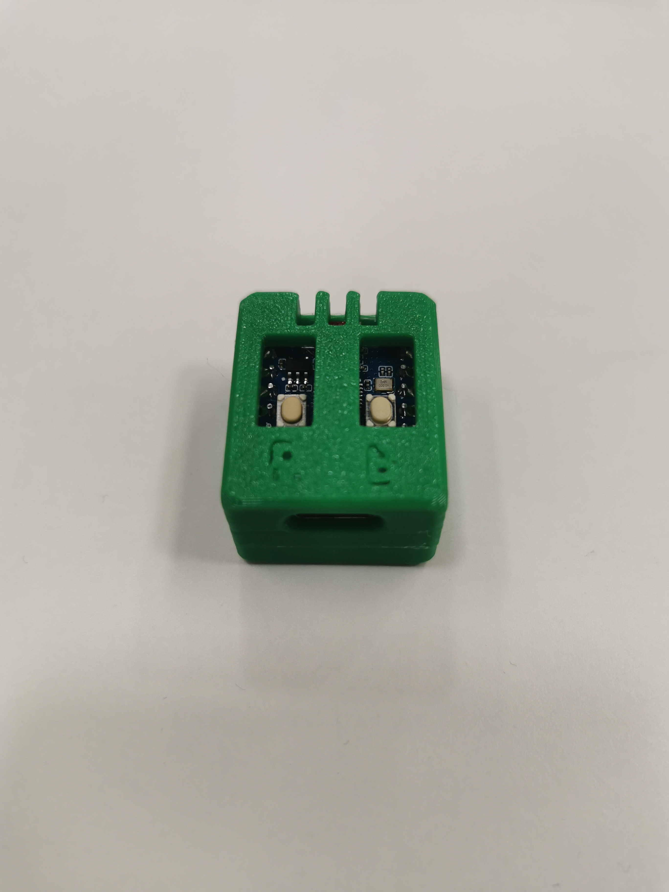

Final Design
Final design of the TG case, incorporating improvements from previous prototypes with further improved button accesss


- Final design features and benefits: Ventilation holes, modified button access.
- Buttons are now easily accessible without resistence from the case. Ventilation slots changed to holes improve airflow.
- This design fulfils all criteria required for a suitable ESP32-C3 Zero case, allowing access to the pins, BOOT & RESET buttons & USB-C port.